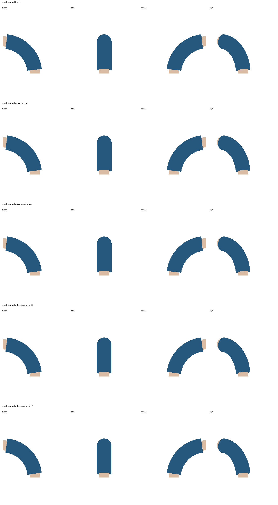
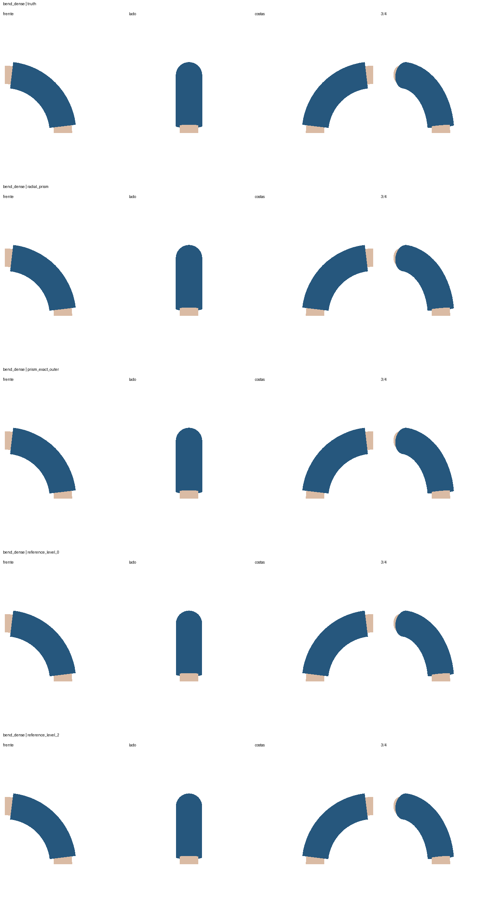
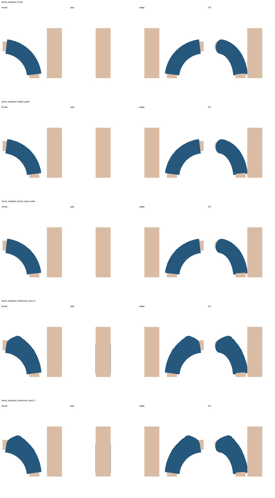
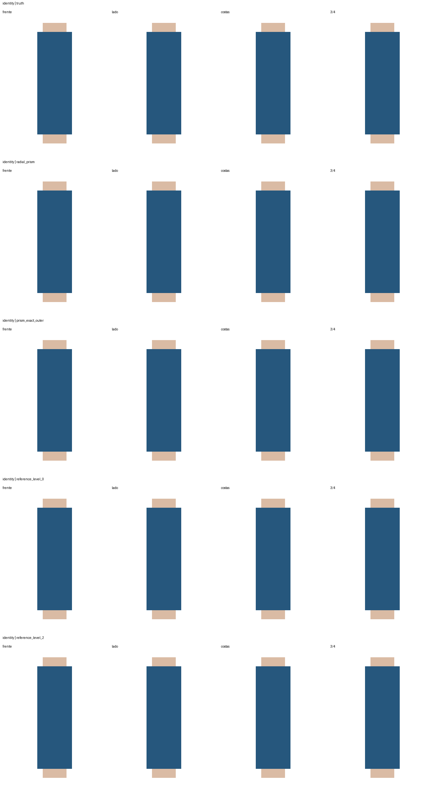

Tudo gerado por código. Azul: manga; bege: corpo. Em cada comparação: resposta correta, radial + prisma, prisma com cage externa correta, campo sem subdivisão, campo com duas subdivisões.
O radial passa nestes controles simples. O campo suave sofre influência indevida do vizinho. Isso não aprova compatibilidade universal ou resolve os assets reais.
Relatório completo · Métricas e hashes · Controle da influência do vizinho


Na vista lateral, o volume vizinho oculta parte do braço.

